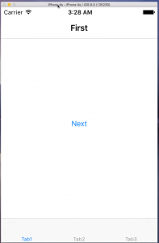
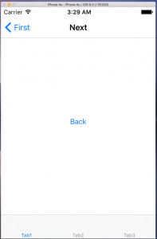
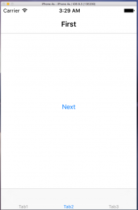
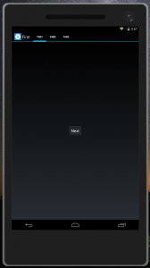
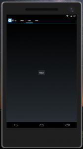
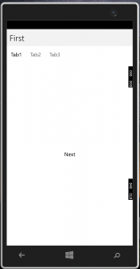
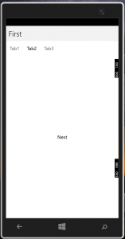

前回はAndroidのUnzipped Failedを解決しました。
Problem
以前、TabbedPageについて記事を書きましたが、もう一つ重要なNavigationPageを組み合わせて見ます。
ただ、NavigationPageとTabbedPageを組み合わす際、NavigationPageの子要素として、TabbedPageを加えるのはよくないとのこと。
三日月 ふゆの氏の記事。
元ネタ。
これを踏まえ、TabbedPageの下に、NavigationPage、NavigationPageの下に2つのContentPageというシンプルな実装を試しました。
ContentPageの最初でNextボタンがあり、それを押下すると、次のページにNavigationされる、というものです。
また、それぞれのPageにViewModelが紐付きます。つまり、4つのViewと4つのViewModelです。
そこまで大それたものではないはずです。
その実現のために、Webの各所を見ていきました。
下記は主に参考にさせていただいた記事です。
かずき氏の記事。
Prismの開発者の一人Brian Lagunas氏の記事。
で、いろいろ試行錯誤しましたが、実現できませんでした。
ページが遷移しない、クラッシュする、タブが出ないetcです。
注意
逃げ口上ではないですが、注意事項です。
- Prism.Forms 6.1.0-pre4
- Prism.Unity.Forms 6.2.0-pre4
- Xamarin.Forms 2.2.0.31
の環境の話です。
特に、Prism.Forms、Prism.Unity.Formsはプリリリース版なので、正式版では私が遭遇した問題は治っている可能性があります。
多分私の手法は間違っているだろうし、MVVMの観点からもよくないような気がします。
正しいやり方があると思いますが、動く方法が見つかったので、私は良しとしました。
動かないプロダクトよりも動くプロダクトのが何百倍も価値があります。
UnityApplicationは使わない
まず、Prism.Unity.UnityApplicationを継承して、Appを実装しますが、この方法は使いません。
なぜかというと、OnInitializedをオーバーライドし、NavigationSerice.Navigateメソッドで一番最初に表示するページを指示するのですが、TabbedPageを指示するとクラッシュします。ContentPageである、NavigationPageの子要素ならOKですが、そうすると、TabbedPageとNavigationPageが見えなくなります。
ですので、Obsoleteではありますが、Prism.Unity.UnityBootstrapperを継承したクラスを作成し、そのクラスのRunメソッドにAppクラスのインスタンスを渡す方法をとります。
これならば、CreateMainPageをオーバーライドする際に、TabbedPageを指定することができます。
NavigationServiceは使わない
NavigationServiceのインスタンスには、明示的に指定しない限り、Prism.Unity.Navigation.UnityPageNavigationServiceが使われますが、無視します。
このクラスを使えば、本来はNavigationする際の、履歴を管理して、Backしたりできるはずなのですが、私にはどうやってもそれができませんでした。
ソースを見ると、UnityPageNavigationServiceのコンストラクタに、UnityContainerを渡しているのですが、途中でページの履歴の基準がMainPageになってしまっており、これによりNavigationがうまくいかなくなっているように見えます。ページは遷移するのですが、左上に本来は表示されるであろう直前のページへの遷移ボタンが表示されません。
以上を踏まえ今回のソースです。
Resolution
ViewModel
まず、ViewModelはすべて引数をとりません。またViewModelとViewの紐付けはViewModelLocator.AutowireViewModelで実現しています。
TabbedPageとNavigationViewに対応するViewModelは空なので無視します。
FirstPageViewModel.cs
1 | using Prism.Commands; |
NextPageViewModel.cs
1 | using Prism.Commands; |
ポイントはPrism.Common.IPageAwareの実装です。単純にPageプロパティを持つだけですが。
これによって、PageのNavigationプロパティにViewModelからアクセスできるようになり、PopAsyncとPushAsyncを呼び出せるようになります。
これでページの遷移が可能になります。
Views
正直、BindingContextを見て、挙動を変える方法はあまり好きではないですし、コードビハインドをいじるのも嫌なんですが…
FirstPage.xaml.cs
1 | using Prism.Common; |
NextPage.xaml.csも同じような感じです。
BindingContextChangeをサブスクライブして、BindingContextがIPageAwareを実装していたら、Pageプロパティに自分自身を設定します。
コメントにもありますが、なぜかInitializeComponentより前で、BindingContextが設定されていたので、苦肉の策でInitializeComponentの前でサブスクライブしてます。
Xamlですが、Main、つまりアプリ全体を表現する要のXamlだけ記載しておきます。他は単純なので…
MainPage.xaml
1 | <?xml version="1.0" encoding="utf-8" ?> |
Startup
最後に、スタートアップ周りのコードです。
冒頭のObsolete等はここです。
App.cs
1 | namespace Xamarin.Forms.Portable8 |
Bootstrapper.cs
1 | using System; |
コメントアウトした箇所は実行に影響がないので削除しました。
テスト
動かしてみました。
iOS

Tab1のFirst page
{kind=link}

Tab1のNext page
{kind=link}

Tab2のFirst page
{kind=link}
Android

Tab1のFirst page
{kind=link}

Tab1のNext page

Tab2のFirst page
{kind=link}
UWP

Tab1のFirst page
{kind=link}
{kind=link}

Tab2のFirst page
{kind=link}
きちんとタブごとに遷移している状態を覚えています。
Conclusion
かなり苦労しましたが、やりきった感じでいっぱいです。
間違っているようなやり方ですが、動けばいい、という方はいると思うので、だれかの役に立つでしょう。
Source Code
https://github.com/takuya-takeuchi/Demo/tree/master/Xamarin/08_Xamarin.Forms.Portable8